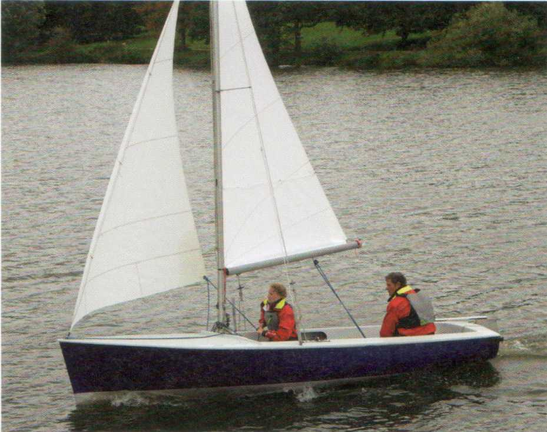
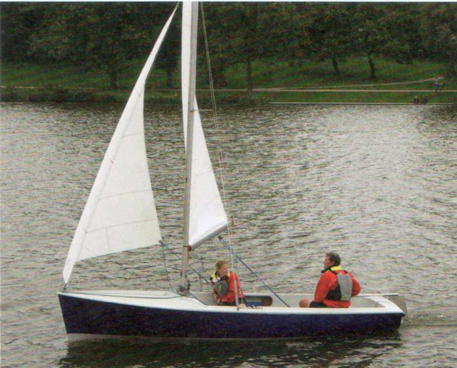

Auf Halb-Wind-Kurs ist es meist noch möglich, das Großsegel optimal anzustellen. Auf raumeren Kursen geht das oft nicht mehr, weil Segel und Baum an Wanten und Saling anliegen.
► Das Großsegel so weit fieren, dass das Vorliek gerade noch nicht killt.
Häufiger Fehler: Das Vorsegel wird zu dicht gefahren. Die Vorschot ebenfalls so weit fieren, dass das Vorliek gerade noch nicht killt.
► In Böen nicht anluven - wie am Wind -, sondern abfallen.
Das Boot wird dadurch schneller, der scheinbare Wind an Bord weniger, obwohl der wahre Wind zugenommen hat. Im Übrigen richtet sich die Segelstellung nach dem zu steuernden Kurs. Schralen und Raumen wird nicht mehr mit dem Ruder korrigiert, weil man seinen anliegenden Kurs unbeirrt durchhalten kann, sondern mit den Schoten. Der Verklicker dient als verlässliche Orientierungshilfe für die Stellung des Großsegels.
Es sind dies die Kurse, auf denen der Baum zu steigen beginnt und das Großsegel verwindet. Der Segler spricht von Twist. Ein verwundenes (twistendes) Segel aber büßt erheblich an Wirksamkeit ein. Deshalb muss spätestens jetzt der Baumniederholer steif durchgesetzt werden.
Je raumer der Wind kommt, umso geringer wird die Abdrift. Entsprechend kann das Schwert aufgeholt werden, etwa zur Hälfte.
Dadurch verringern sich die benetzte Oberfläche und der Reibungswiderstand im Wasser. Das Boot wird schneller. Auch das Ruderblatt kann etwas aufgeholt werden.
Um aufrecht zu segeln und größtmögliche Geschwindigkeit zu laufen, muss eine Jolle in Böen - zumindest auf Halb-Wind-Kurs - ebenfalls ausgeritten werden. Auch das Trapez kann auf diesem Kurs voll zum Einsatz kommen. Im Übrigen gilt für die Gewichtsverteilung der Crew das Gleiche wie beim Segeln am Wind.

Mit halbem Wind...

... und raumschots.